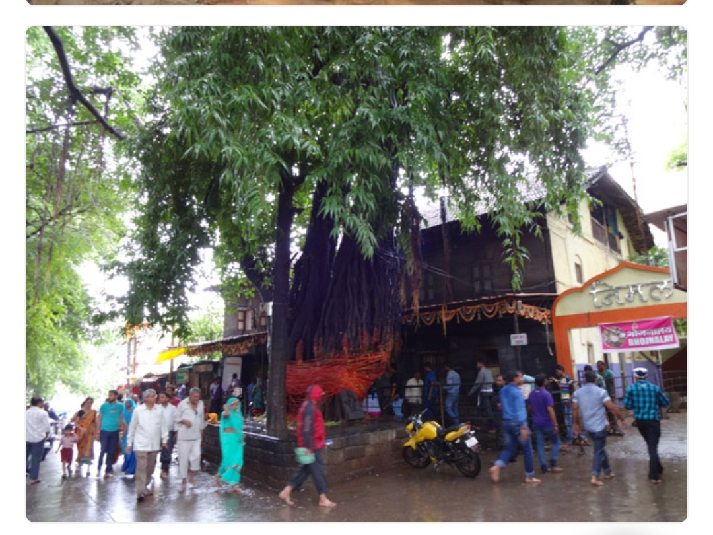

Choose your pass
5-Destination Pass
₹2,499
Activation charge · GST and other applicable taxes extra
Choose five eligible pilgrimage destinations from the published pass list.
10-Destination Pass
₹4,999
Activation charge · GST and other applicable taxes extra
Access the complete ten-destination collection during your membership year.
Fixed benefits for 12 months
₹500 off each eligible destination visit
Only for a registered customer with an activated, valid Divine Pilgrimage Card. The card must be presented and verified before the eligible booking is confirmed.
One complimentary meal for the couple
One meal for two people—the registered member and spouse—once during the 12-month membership period.
Monthly Lucky Couple selection
One eligible couple is selected each month for a special redemption coupon, under published selection and redemption rules.
Personalised digital membership card
Issued after customer registration, identity/contact verification and successful activation-payment confirmation.
Membership rule: ₹500 is not a public discount. It is reserved for the registered cardholder with a valid, activated card. One redemption applies to each eligible pass destination visit; the card cannot be transferred or used for another customer's booking.
Ten featured pilgrimage destinations
The 5-place pass selects any five; the 10-place pass covers all ten. Individual temple visits and optional sightseeing stops are grouped under their named destination hub and do not create extra pass slots.

1. Tirumala–Tirupati
Venkateswara Temple, Tirumala; Padmavathi Ammavari Temple, Tiruchanur; Sri Kalahasti as an optional extension.

Photo: Nitin3009 · Wikimedia Commons · CC BY-SA 4.0
2. Shirdi
Shri Sai Baba Samadhi Mandir, Dwarkamai, Chavadi and Gurusthan; optional Shani Shingnapur excursion.

3. Nashik–Panchavati
Kalaram Temple, Sita Gufa, Ramkund, Godavari ghats and nearby Panchavati pilgrimage sites.

Photo: Krishnav25 · Wikimedia Commons · CC BY-SA 4.0
4. Trimbakeshwar
Trimbakeshwar Jyotirlinga; optional Saptashrungi Gad and nearby Nashik heritage stops, subject to route timing.

Photo: Hellohappy · Wikimedia Commons · CC BY-SA 4.0
5. Puri
Shree Jagannath Temple, Gundicha Temple, Loknath Temple, Narendra Tank and Puri Beach.

Photo: Muralikrishna m · Wikimedia Commons · CC BY 4.0
6. Bhubaneswar
Lingaraj, Mukteswar, Rajarani and Parasurameswar temples; Dhauli and Udayagiri–Khandagiri as heritage additions.

Photo: Dev Jadiya · Wikimedia Commons · CC BY 4.0
7. Konark
Konark Sun Temple, Chandrabhaga Beach, Ramachandi Temple and Pipili craft village.

Photo: Vyacheslav Argenberg · Wikimedia Commons · CC BY 4.0
8. Madurai
Meenakshi Amman Temple, Thiruparankundram, Alagar Kovil and Pazhamudircholai, subject to opening schedules.

Photo: Wanderlusts · Wikimedia Commons · CC BY-SA 4.0
9. Rameswaram
Ramanathaswamy Temple, Agni Theertham, Pamban Bridge viewpoint, Gandhamadhana Parvatham and Dhanushkodi.

Photo: Aliva Sahoo · Wikimedia Commons · CC BY-SA 3.0
10. Varanasi–Kashi
Kashi Vishwanath, Annapurna Temple, Dashashwamedh Ghat, Ganga Aarti and Sarnath; Prayagraj and Ayodhya are optional multi-day extensions.
Long-distance itinerary collection from Hyderabad
ANDHRA PRADESH · 4 DAYS / 3 NIGHTS
Tirupati – Tirumala – Sri Kalahasti
- Day 1: Hyderabad to Tirupati; hotel check-in and rest. If arrival time permits, visit Sri Padmavathi Ammavari Temple at Tiruchanur.
- Day 2: Tirumala Darshan strictly according to the pilgrim’s confirmed TTD ticket/reporting slot; visit permitted nearby shrines subject to TTD instructions; return to Tirupati.
- Day 3: Tirupati local circuit—Govindaraja Swamy Temple, Kapila Theertham and optional Sri Kalahasti, subject to temple timings and route feasibility.
- Day 4: Return to Hyderabad with planned meal and rest stops.
The road journey is planned within one travel day each way under normal conditions. Darshan tickets, reporting times and access rules must be confirmed directly with TTD; no special entry or waiting time is guaranteed.
ODISHA · 8 DAYS / 7 NIGHTS
Puri – Bhubaneswar – Konark – Chilika
- Day 1: Hyderabad to Visakhapatnam; planned rest stop and overnight stay.
- Day 2: Visakhapatnam to Puri; hotel check-in and rest.
- Day 3: Jagannath Temple, Gundicha Temple, Loknath Temple, Narendra Tank and Puri Beach.
- Day 4: Konark Sun Temple, Chandrabhaga Beach, Ramachandi and Pipili.
- Day 5: Bhubaneswar—Lingaraj, Mukteswar, Rajarani and Parasurameswar temples.
- Day 6: Dhauli, Udayagiri–Khandagiri and optional Chilika/Satpada excursion, subject to boat and weather operations.
- Day 7: Puri to Visakhapatnam; overnight rest.
- Day 8: Visakhapatnam to Hyderabad.
Route estimates vary. One current planner proposes a two-day split of about 7.6 hours of driving per day; confirm the midpoint, road conditions and driver rest plan before quoting. Route-planning reference.
TAMIL NADU · 7 DAYS / 6 NIGHTS
Madurai – Rameswaram – Dhanushkodi
- Day 1: Hyderabad to Bengaluru; overnight rest.
- Day 2: Bengaluru to Madurai; hotel check-in and rest.
- Day 3: Madurai—Meenakshi Amman Temple, Thiruparankundram, Alagar Kovil and Pazhamudircholai, subject to opening hours and route timing.
- Day 4: Madurai to Rameswaram; Ramanathaswamy Temple and Agni Theertham, following current temple procedures.
- Day 5: Pamban viewpoint, Gandhamadhana Parvatham and Dhanushkodi, subject to local access and weather.
- Day 6: Rameswaram to Bengaluru; overnight rest.
- Day 7: Bengaluru to Hyderabad.
Route estimates are approximately 1,180–1,205 km and 18–20 hours of driving; split the journey over two days each way with an overnight halt and verified driver-duty plan. Route-planning reference.

MAHARASHTRA · 5 DAYS / 4 NIGHTS
Shirdi – Shani Shingnapur – Nashik – Trimbakeshwar
- Day 1: Hyderabad to Shirdi; planned meal and rest breaks.
- Day 2: Sai Baba Samadhi Mandir, Dwarkamai, Chavadi and Gurusthan; optional Shani Shingnapur visit.
- Day 3: Nashik and Panchavati—Kalaram Temple, Sita Gufa, Ramkund and Godavari ghats.
- Day 4: Trimbakeshwar Jyotirlinga; optional Saptashrungi only if timing and route allow.
- Day 5: Return to Hyderabad with a safe overnight break if required by driver duty and actual road conditions.
Route estimates place Hyderabad–Shirdi at about 608 km and Hyderabad–Nashik Road at about 638 km. Final routing and any return overnight stop depend on traffic and driver-duty limits. Shirdi route estimate · Nashik route estimate.
NORTH INDIA · 7–8 DAYS
Kashi – Prayagraj – Ayodhya
- Day 1: Hyderabad to Varanasi by booked train or flight; local transfer on arrival.
- Day 2: Kashi Vishwanath, Annapurna Temple and selected ghats.
- Day 3: Sunrise Ganga visit, Sarnath and evening Ganga Aarti.
- Day 4: Varanasi to Prayagraj; Triveni Sangam and selected local sites.
- Day 5: Prayagraj to Ayodhya; Ram Mandir area, Hanuman Garhi and Saryu riverfront, subject to current access rules.
- Day 6: Additional Ayodhya time or return transfer.
- Days 7–8: Return to Hyderabad by booked train or flight, within the two-day travel limit.
The Hyderabad–Varanasi road journey is about 1,224 km and over 21 hours in one route estimate. This circuit is offered as rail/air plus local cab by default—not as a single-driver road promise. Road-distance reference · Rail/air options.
Gujarat extension: Dwarka, Nageshwar and Somnath are a future multi-modal circuit. The Hyderabad–Dwarka road journey is about 1,575 km and roughly 27 hours in one route estimate; it will not be sold as a two-day single-driver road package. Rail/air plus locally confirmed transfers may be considered separately.
How membership registration works
- Send a membership enquiry to SaahiRides and select the 5- or 10-destination pass.
- Provide customer registration details and consent to the membership terms and privacy notice.
- Receive the payment instructions and final terms before paying.
- After payment is verified and membership is activated, SaahiRides issues the personalised digital card.
- Present the active card before each eligible booking to receive the ₹500 member discount.
Request membership registrationExplore all travel tours
Membership conditions
- Membership is valid for 12 months from the activation date.
- ₹500 discount is only for the registered member with a valid, activated, non-transferable Divine Pilgrimage Card, presented before booking confirmation.
- One ₹500 redemption is available per eligible pass destination visit during the membership term; it is not a discount for unregistered companions or a cash benefit.
- One complimentary meal for two (registered member and spouse) is available once per membership term, at a SaahiRides-designated participating outlet or confirmed meal arrangement.
- Monthly Lucky Couple selection is subject to separate published eligibility, selection, coupon-value and redemption rules. No coupon value is promised on this page.
- Membership fee covers membership benefits only. Vehicle hire, driver charges, fuel, tolls, parking, accommodation, meals beyond the stated complimentary meal, entry tickets, Darshan tickets, guide fees and other trip costs are separately quoted unless explicitly included in a written itinerary.
- Darshan tickets, temple access, accommodation and transport availability are controlled by the respective authorities and providers. SaahiRides does not guarantee special entry or Darshan slots.
- Bookings are subject to operational coverage, vehicle availability, itinerary confirmation, safe driver duty limits and written quotation.
- Cancellation, refund, expiry, force majeure and unused-benefit rules will be provided in the final membership agreement before payment.
Destination photographs are credited to their authors and linked to the applicable Creative Commons licence. Images are illustrative and do not represent a confirmed booking, vehicle or live tour.
Launch status: This page explains the proposed membership and itinerary collection. Self-service payment, automatic membership activation, QR verification and card download will be enabled only after the registration and redemption system is tested. Do not send activation money to an unofficial account or assume a travel booking is confirmed from membership registration alone.